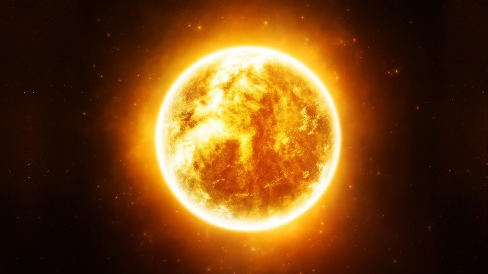

O Sistema Solar é constituído essencialmente pelo Sol e pelo
conjunto de corpos que estão sob influência de seu campo gravitacional.
Dentre estes, os oito planetas são os componentes mais massivos do sistema,
divididos em planetas telúricos(os quatro menores e mais próximos do Sol,
predominantemente rochosos) e gigantes gasosos
(os quatro maiores e mais afastados do Sol).
A maior parte exerce força gravitacional suficiente para manter uma
camada de gases ao seu redor, ou seja, possuem atmosfera,
e também satélites naturais orbitando-os.
Enquanto a Terra e Marte apresentam somente um
e dois satélites naturais respectivamente,
os gigantes gasosos possuem dezenas cada um,
nas mais variadas formas, composições e tamanhos.
Existem ainda cinco corpos que, de acordo com os padrões
da União Astronômica Internacional, se enquadram na categoria de planetas
anões e que, na sua maioria, também exibem satélites naturais.
Vários asteroides se fazem igualmente acompanhar por pequenas luas.
Os quatro planetas gigantes possuem, ainda, sistemas de anéis planetários,
formados essencialmente por partículas de gelo e poeira com dimensões máximas de alguns centímetros,
que orbitam o planeta no plano de seu equador.
Espalhados por toda extensão do Sistema Solar existem milhares de corpos menores,
como asteroides e cometas, além da poeira interplanetária e de matéria proveniente do Sol
que permeiam o espaço entre os corpos.

* Por muito tempo acreditou-se que a Terra fosse o centro do universo, e que todos os astros eram influenciados por esta. Essa teoria ficou conhecida como Geocentrismo, cujo principal expoente foi Claudio Ptolomeu.
Essa teoria perdurou durante muito tempo na história da humanidade, sendo refutada pela teoria do Heliocentrismo, especialmente com os debates formulados por Nicolau Copérnico, a qual defendia que o Sol era o centro do universo, e que os demais astros giravam ao entorno deste, influenciados pelo seu campo gravitacional.

O componente central e principal fonte de energia do Sistema Solar, o Sol, embora seja o astro mais luminoso quando visto do nosso planeta, é uma estrela relativamente pequena e comum na Via Láctea, com um raio de aproximadamente setecentos mil quilômetros. É constituído essencialmente por hidrogênio e hélio ionizados, mantidos coesos sob forma aproximadamente esférica graças à ação da gravidade. Consequentemente, a imensa pressão e temperatura em seu núcleo são suficientes para que ocorra o processo de fusão nuclear, no qual há a conversão de núcleos de hidrogênio em núcleos de hélio e liberação de energia. A estrela emite radiação em praticamente todo o espectro eletromagnético, sobretudo na forma de luz visível.
Dentre as camadas que compõem o Sol, o núcleo, onde ocorrem as reações de fusão, é a mais interna, atingindo uma temperatura de cerca de quinze milhões de graus Celsius. A energia produzida nessa região transfere-se para a zona de radiação, através da qual atinge a camada subsequente, denominada zona convectiva, que, por sua vez, a transporta até a fotosfera, a superfície visível do Sol por onde escapa a radiação que ilumina todo o Sistema Solar. O campo magnético da estrela faz com que surjam manchas (regiões mais escuras na fotosfera) e proeminências solares que, por sua vez, podem dar origem a uma ejeção de massa coronal. Tais eventos estão geralmente associados aos ciclos solares, cujo pico de atividade ocorre a cada onze anos. Circundando o Sol encontram-se a cromosferae a coroa solar, duas camadas de gases que constituem a atmosfera da estrela, praticamente invisíveis por conta do ofuscamento provocado pelo brilho superficial. Dessa coroa emanam correntes de partículas eletricamente carregadas, a uma temperatura de dois milhões de graus Celsius, responsáveis pelo vento solar que se espalha com grande velocidade e atinge os confins do sistema.